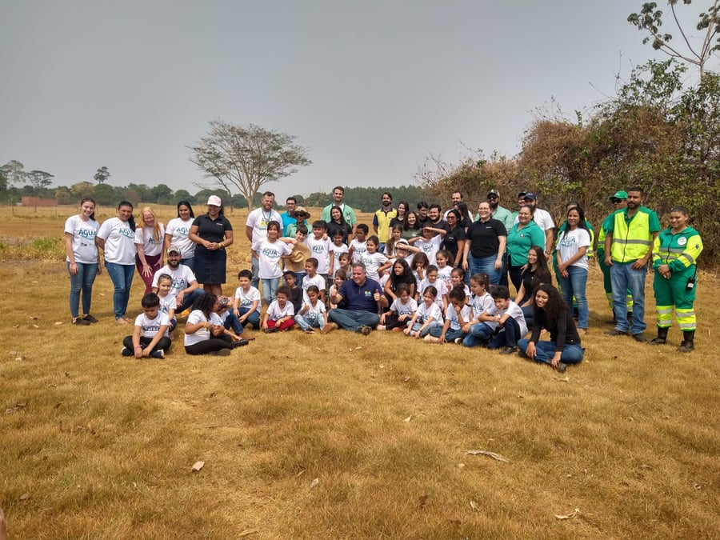

Novo Lei nº 15.512, de 22 de setembro de 2026
ECA Ambiental: toda criança tem direito à natureza.
A nova lei federal reconhece o direito de crianças e adolescentes à natureza, com absoluta prioridade. O IPAC abraça essa causa com foco na sensibilização ambiental: levando estudantes às nascentes, formando educadores e aproximando famílias da água, do solo e da biodiversidade.
- Acesso a áreas naturais saudáveis
- Brincar livre em contato com a natureza
- Educação baseada na natureza
- Defesa e recuperação da natureza
